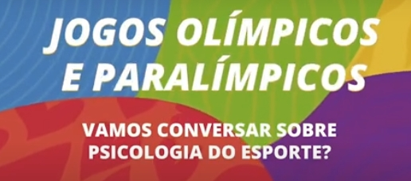

O Conselho Federal de Psicologia, lançou no dia 30 de julho, no seu canal no YouTube, o uma série sobre psicologia do esporte.
No episódio de lançamento do programa denominado: Vamos falar sobre psicologia do esporte? Cristianne Carvalho, do Conselho Regional de Psicologia do Esporte do Maranhão (CRP 22); Márcio Geller, do Conselho Regional de Psicologia do Esporte do Rio Grande do Sul (CRP 07); Andrea Duarte Pesca da Associação Brasileira de Psicologia do Esporte, Atividade Física e Exercício – ABEPEEx, e Thabata Telles, da ABRAPESP contaram um pouco da história da PE no Brasil e sua área de atuação.
Apresentação: Ana Sandra Fernandes, presidente do Conselho Federal de Psicologia